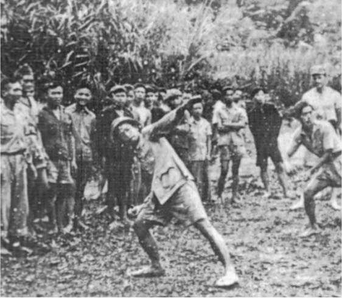
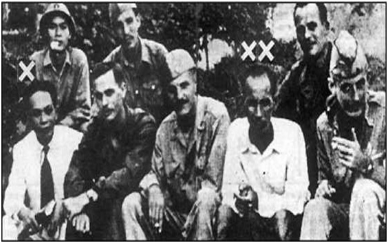

Nguyễn ái Quốc chường mặt tại Trung Hoa năm 1938 sau một thời gian dài lưu trú tại Moscou. Chúng ta thấy ông hoan nghênh các vụ án ở Moscou và năm 1939, từ Quế Lâm viết thư về thuyết phục ‘’các đồng chí thân mến’’ ở Hà Nội về tội lỗi ghê tởm của những kẻ xu hướng Trotskij và cần thiết phải ‘’tiêu diệt chúng về mặt chính trị’’.
Nguyễn ái Quốc lúc đó lấy tín Hồ Quang, được đảng cộng sản Trung Hoa che chở an toàn, làm sĩ quan huấn luyện cho Bát Lộ Quân, trong giai đoạn liên minh Quốc-Cộng lần thứ hai chống xâm lăng Nhật Bản. Năm 1940, ông tới Vân Nam, gặp các lãnh tụ đảng cộng sản Đông Dương vừa thoát khỏi vọng vây quét bắt bớ lớn 1939-1940, như Phạm văn Đồng, Võ nguyên Giáp, Trường Chinh, Hoàng quốc Việt...

Quân Mỹ tập luyện quân Việt Minh

Võ nguyên Giáp với Hồ chí Minh sát cánh cố vấn Mỹ
Trong khi ở Đông Dương người Nhật luôn trợ giúp những nhóm quốc gia người Việt, thì ở Trung Hoa Quốc Dân Đảng ra sức tập hợp những người Việt tản mát lánh sang hai tỉnh giáp giới Bắc Kỳ nhằm thành lập những đội quân chính trị và quân sự giúp cho Hoa quân nhập Việt để chống Nhật. Họ tin cậy nhất những người theo chủ nghĩa quốc gia như Nguyễn Hải Thần và Trương Bội Công.
Trong Tỉnh Quảng Tây, khoảng 500 đảng viên Phục Quốc của Cường Đểlưu vong ở đó sau khi bị thất bại trong việc thiết lập cở sở tại Bắc Kỳ nhân dịpquân Nhật tràn vào hồi tháng 9 năm 1940; họ được sát nhập vào Quân Đội Quốc Dân Đảng.
Ở Vân Nam, những cựu đảng viên Việt Nam Quốc Dân Đảng sống còntrốn thoát sau cuộc bạo động Yên Bái năm 1930, từ lâu rồi họ cùng nhữngđảng viên đảng cộng sản Đông Dương lưu vong tranh nhau huy động ảnh hưởngkhoảng 2000 đồng bào sinh hoạt dọc theo đường sắt Hà Nội-Côn Minh(đường xe lửa nầy thuộc quyền tài phán của Pháp theo Hiệp Ước Trung-Pháp năm 1885). Họ quần tụ xung quanh Vũ Hồng Khanh dưới sự bảo trợcủa Quốc Dân Đảng Trung Hoa. Những người cộng sản - do Nguyễn áiQuốc bí mật chỉ huy - từ lâu rồi đã lên án họ là lực lượng được đế quốc Pháp dung dưỡng.
Chỉ riêng một nhóm nhỏ những người xu hướng Trotskij ở Côn Minhđứng ngoài hoạt động Quốc Dân Đảng. Họ vẫn bị những người theo chủnghĩa Stalin bài xích và vu khống. Theo Hoàng văn Hoan, bấy giờ bộ hạ Nguyễn ái Quốc, nhóm ấy:
Chịu ảnh hưởng sâu sắc của Tạ Thu Thâu, tiêm nhiễm những lý luậngiả danh cách mạng có thể lừa phỉnh quần chúng, nhóm xu hướngTrotskij tuyên truyền và kích động đồng bào sống lưu vong xuốngđường biểu tình chống Pháp và đòi chính quyền Trung Hoa giảmthuế. Ở mọi nơi chúng ta đả kích chúng quyết liệt [hãy hiểu là vucáo trắng trợn], vì thế nhóm theo Trotskij không thực hiện âm mưu(nguyên văn) được và chúng bị hoàn toàn có lập. (154)
Nguyễn Ái Quốc hồi phục Việt Minh
Quốc Dân Đảng Trung Hoa động viên những người quốc gia lưu vong,Nguyễn ái Quốc thấy đấy là cơ hội cho đảng cộng sản Đông Dương xây dựng lạinhững lực lượng đã bị tan vỡ trong cuộc thực dân Pháp đàn áp năm 1939-1940. Ông giấu cái nhãn cộng sản và chấp nhận lấy tên của một nhóm quốcgia cũ: Việt Minh (viết tắt Việt Nam Độc lập Đồng Minh Hội) thành lập ởNam Kinh hồi năm 1936, do hai chiến hữu cũ của Phan Bội Châu làNguyễn Hải Thần và Hồ Học Lãm, và được Quốc Dân Đảng Trung Hoa thừanhận khi thành lập. Tổ chức Việt Minh này vất vơ ít người biết tới và đã hầunhư bị lãng quên.
Tháng 10 năm 1940, Phạm văn Đồng, Võ nguyên Giáp, Hoàng vănHoan cùng ba đồng chí khác của Nguyễn ái Quốc tự mình đến Quế Lâm(Quảng Tây) đểyêu cầu tướng Lý Tế Thâm tái thừa nhận cái tổ chức ViệtMinh ma này. Họ tự giới thiệu như những người theo quốc gia chủ nghĩa ởtrong nước đấu tranh chống ‘’Nhật xâm lược’’, như vậy họ khả năng hỗ trợ Quốc Dân Đảng. Lý Tế Thâm, kẻ tàn sát công nhân nổi loạn ở Quảng Châunăm 1927, niềm nở tiếp đón những người đến yêu cầu, gợi rằng y tuân phục ý nguyện cuối cùng của Tôn Dật Tiên là giúp đỡ các ‘’dân tộc nhược tiểu bịáp bức’’. Lý Tế Thâm đồng ý cho họ cư trú tại ‘’Quân Khu 4’’, nơi mà họ Lý cùng chỉ huy với Trương Phát Khuê, một tên đao phủ khác đã tàn sát Công xã Quảng Châu.
Nguyễn ái Quốc vẫn bí ẩn, sáng kiến đặt một bữa tiệc 500 đôla TrungHoa - do Quốc Tế Cộng Sản đài thọ - thết đãi bí thư của Lý Tế Thâm để ‘’y kính nể mình và giúp mình nhiều hơn’’ (theo lời Hoàng văn Hoan). Bộ hạ Nguyễn ái Quốc được cấp giấy thông hành có đóng dấu ‘’Hoa Namcông tác đoàn’’, có thể đi tới Tịnh Tây, nơi các lãnh tụ các nhóm lưu vongtập hợp vào tháng 4 năm 1941, được các Tướng lãnh Trung Hoa bảo trợ, để gia nhập tổ chức ‘’Việt Nam Dân Tộc Giải PhóngĐồng Minh’’. Trương Bội Công đứng đầu tiểu tổ chính trị, tiếp đón nhóm đồng bào trẻ tuổi nầy.
Một tháng sau, từ ngày 10 đến 19 tháng 5, tại khu rừng biên giới ở Pác Bó (Cao Bằng), Nguyễn ái Quốc triệu tập trung ương đảng cộng sản Đông Dương ranghị quyết thành lập một Việt Minh mới với mục tiêu cấp thời là ‘’đánhđuổi phát xít Nhật-Pháp, khôi phục nền độc lập hoàn toàn xứ Việt Nam,liên minh với các lực lượng dân chủ đang chống phát xít và xâm lược’’.Mặt trận quốc gia dân tộc này lấy quốc kỳ cờ đỏ sao vàng. Khác với cácnhóm quốc gia lưu vong ở Trung Hoa, mục đích cuối cùng của Mặt Trận Việt Minh là ‘’thành lập một nước Việt Nam Dân Chủ Cộng Hòa’’, banhành chế độ phổ thông đầu phiếu, các quyền tự do dân chủ tư sản, bìnhđẳng chính trị giữa nam và nữ, quyền các dân tộc ít người tự định đoạt sốphận của mình.
Trong chương trình không thấy nói đến đấu tranh giai cấp và cải cáchruộng đất, vì muốn liên minh với tầng lớp tư sản và địa chủ nên không để cho họ phải e ngại. Chương trình chỉ hứa hẹn cho nông dân, ‘’cánh tay’’ củacách mạng sắp tới, ‘’tịch thu tài sản của bọn đế quốc và phản quốc, giảm địa tô và lợi tức, bỏ thuế thân và phân chia công điền và công thổ’’, nói trắngViệt Minh sẽ vất cho dân cày những miếng nhà giầu ăn thừa. Đối với công nhân, sẽ thực hiện ngày làm việc tám giờ, bảo hiểm xã hội và hưu trí...
Khi Hitler tung quân tấn công nước Nga ngày 22 tháng 6 năm 1941, đẩy Stalin nhập phái đế quốc ‘’dân chủ’’, đảng cộng sản Đông Dương trá hình ra Mặt Trận Việt Minh, khẳng định cụ thể mục tiêu trong bản tuyên ngôn ngày 25tháng 10: ‘’Đoàn kết toàn cả mọi giai cấp xã hội, hợp tác với những phầntử Pháp chống phát xít, tiêu diệt chủ nghĩa thực dân và chủ nghĩa đế quốcphát xít’’. Trong một tập sách đảng cộng sảnĐông Dương xác định hiệp nhứt cùng các lựclượng dân chủ chống phát xít, chống xâm lược, xây dựng một nền Cộng Hòa Dân Chủ.
Từ ngày 1 tháng 8 năm 1941, Việt Minh xuất bản tờ báo tuyên truyền: Việt Nam Độc Lập. Võ nguyên Giáp và Phạm văn Đồng tiến hành tổ chứcmột mạng lưới hoạt động bí mật tại miền Thượng Du Bắc Kỳ, rồi từ tháng 11,gây dựng một nhóm du kích quân đầu tiên, mầm mống của ‘’giải phóngquân’’ sau này.
Năm sau, trong một tờ truyền đơn ngày 10 tháng 10, Việt Minh tuyên bố ‘’giơ bàn tay thân ái’’ với những người Pháp theo De Gaulle ở ĐôngDương. (155)
Tổ chức Việt Minh xây dựng theo lối đẳng cấp hình kim tự tháp (pyramide), trên chuyên chế dưới đồng như hệ thốngđảng cộng sản Đông Dương và tổ chức tiến thâncủa nó là đảng Thanh Niên. Công nhân, nông dân, phụ, binh sĩ, thanh niên...không còn tập hợp trong các tổ chức công đoàn và nông hội nữa, họquần tụ trong các ‘’hội cứu quốc’’. Hàng ngũ Mặt Trận Việt Minh mở rộngtới mọi tầng lớp trong xã hội. Các tổ chức cơ sở gọi là các ‘’tổ cứu quốc’’.Tổng bộ, cơ quan lãnh đạo cao nhất chủ trì toàn bộ. Trong công văn ngày15 tháng 11 năm 1942 Tổng bộ tuyên bố: ‘’Cán bộ quyết định tất cả mọi sự’’. Nguyễn ái Quốc bên ngoài không chủ trì Mặt Trận Việt Minh, nhưng thậtsự chính mình lãnh đạo và tổ chức toàn bộ phong trào, còn Trường Chinhlãnh vai tổng bí thư đảng cộng sản Đông Dương.
Việt Minh cần minh giải tại sao bỏ khẩu hiệu đấu tranh giai cấp. Điều đó Trường Chinh phân biện rằng phong trào đấu tranh giai cấp công nhânnon nớt, chưa thật xứng đáng với vai trò lãnh đạo cách mạng của mình(Chiến TranhThái Bình Dương và cách mạng giải phóng dân tộc ĐôngDương, tháng giêng 1942).
Nguyễn ái Quốc dịch Lịch Sử Đảng Cộng Sản (Bolshevik) Liên Sô (theo bản chữ Tàu) để huấn luyện đảng viên cộng sản; còn đối với các ngườitham gia Việt Minh, ông tái dụng ngôn ngữ kích động lòng yêu nước láo khoét áp dụng thời Đảng Thanh Niên những năm 20. Trong bài thơ Lịch sửnước ta phát hành năm 1942, ông hô hào:
Xét trong lịch sử Việt Nam
Dân ta vốn cũng vẻ vang anh hùng.
Nhiều phen đánh Bắc dẹp Đông,
Oanh oanh liệt liệt con Rồng cháu Tiên.
Đã từ lâu, Nguyễn ái Quốc cảm ngộ ý kiến của Mao Trạch Đông (‘’chính quyền nơi đầu họng súng’’), mưu lược thu phục chính quyền căncứ vào một cuộc ‘’chiến tranh nông dân’’ ông gọi là ‘’chiến tranh cách mạng’’. Trước hết ông trông cậy Quốc Dân Đảng Trung Hoa trợgiúp để triển khai lựclượng du kích trong vùng Việt Bắc (Thượng Du Bắc Kỳ). Thời cơ đến, sẽ mởrộng chiến tranh du kích vào phía Nam, các hội cứu quốc vũ trang bạo động,theo gương đảng cộng sản Trung Quốc, Việt Minh gây dựng chính quyền thống quảncác vùng mới giải phóng; tiến tới thành lập một chính quyền duy nhất trongtoàn quốc.
Cán bộ Việt Minh đang được đào tạo huấn luyện quân sự ở Trung Hoa. Để tránh rắc rối, Nguyễn ái Quốc chấp nhận kế hoạch‘’Hoa quân nhập Việt’’ củaQuốc Dân Đảng Trung Hoa. Trong một công văn ngày 21 tháng chạp năm 1941ông minh giải chính sách thỏa thuận đó như sau:
Rồi đây có thể Hoa quân nhập Việt đánh Nhật. Phương châm chiến thuật của chúng ta là liên minh với quân Trung Hoa đánh Nhật-Pháptheo nguyên tắc ‘’bình đẳng tương trợ’’ (nguyên văn!) và làm cho quânTrung Hoa nhận rằng họ vào Đông Dương để giúp cho cách mạngĐông Dương tức là tự giúp chứ không phải vào Đông Dương để chinhphục Đông Dương. (156)
Từ mùa Hè năm 1942, Trương Phát Khuê, Tổng Đốc Quân Sự Tỉnh Quảng Tây, chuẩn bị hành binh nhập Việt. Y đưa lối 300 người Việt trong vùng y kiểm soátsang trại huấn luyện quân sự ở Daiken và khoảng 100 người sang trường quânsự Nam Ninh.
Sau đó trên 70 người - tương lai họ sẽ là cán bộ Việt Minh - được huấn luyện chiến tranh du kích, phá hoại và tình báo trong các trại và trường quânsự của Quốc Dân Đảng ở Tịnh Tây, Tian Đong, Nam Ninh, Daiken.
Tướng Trương Phát Khuê sáng kiến thành lập Việt Cách
Việt Minh hoạt động bè phái riêng rẽ thiệt hại cho nhóm Nguyễn Hải Thần, Nguyễn ái Quốc bị bắt. Theo lịch sử đảng:
Ngày 13 tháng 8 năm 1942, lấy tên mới là Hồ chí Minh, đồng chí Nguyễn ái Quốc lên đường đi Trung Quốc với danh nghĩa đại biểu Việt Nam Độc Lập Đồng Minh và phân bộ quốc tế phản xâm lược của Việt Nam để tranh thủ sự viện trợ của Quốc Tế. Sau nửa tháng trời đi bộ, vừađến Túc Vinh (một thị trấn thuộc huyện Tịnh Tây, Quảng Tây, TrungQuốc) ngày 29 tháng 8, Người bị chính quyền địa phương của bọnTưởng Giới Thạch bắt giữ. (157)
Bốn mươi bốn năm sau, Hoàng văn Hoan vén tấm màn che dấu mục đích chuyến đi của chủ tịch Việt Minh: Từ trước đến nay rất ít người biết,cũng có người lại nói Hồ Chủ Tịch đi Trùng Khánh là cốt để gặp trung ương đảng cộng sản Trung Quốc chứ không phải đi gặp Tưởng GiớiThạch, có người biết ít nhiều cũng tránh đi không nói (trang 233).
Dẫu sao, khi Nguyễn ái Quốc định qua mặt Trương Phát Khuê toan trực tiếp nương cậy Tưởng Giới Thạch dưới cái tên còn ít người biết là Hồ chí Minh, lại bị bắt giải về ngục Liễu Chạu. Trong khi đó, tháng 10 năm1942, họ Trương lại tập hợp những người lãnh đạo các nhóm tổ chức ngườiViệt thường xuyên đối nghịch nhau như Đồng Minh Hội, Việt Nam Quốc Dân Đảng, PhỤc Quốc, Việt Minh và bẩy nhóm nhỏ nữa. Trương Phát Khuê áp đặt các nhóm này phải kết hợp lại dưới sự chỉ đạo của Nguyễn Hải Thầnnếu như họ còn muốn được giúp đỡ. Chính lúc đó các đảng cách mạng liênminh thành lập Việt Nam Cách MạngĐồng Minh Hội, viết tắt Việt Cách.
Không có đại biểu nào của Việt Minh được bầu vào Ban chấp hành. HọTrương hứa cùng Nguyễn Hải Thần sẽ xuất cho mỗi tháng 100.000 đồngtiền Trung Quốc để tổ chức ở Bắc Kỳ hoạt động phá hoại và tình báo chốngquân Nhật.
Các đảng phái thành phần Việt Cách lưu trú ở Trung Quốc không có liên hệ gì mấy ở trong nước. Chỉ có một mình Việt Minh là hiện diện xuyênqua các ‘’tổ cứu quốc’’ và du kích quân căn cứ giữa những vùng dân tộcthiểu số chống đối chính quyền: Thổ, Mán, Mèo, Tầy, Nùng, ẩn lánh trongcác dãy núi đá vôi, nơi khu rừng sâu khắp hai Tỉnh Cao Bằng và Lạng Sơn.
Cần nhắc lại hồi tháng 9 năm 1940, quân Nhật tấn công Lạng Sơn, Pháp quân thất thủ, hàng trăm nghĩa quân bản địa xung phong đồn bốt línhcảnh vệ người Việt bỏ chạy, họ chiếm đoạt vũ khí. Cuộc nổi loạn tràng lanđến đổi quân đội Pháp càn quèt ba tháng trời mới tái chiếm xong các vùngấy. Đảng viên Phục Quốc mất người chỉ huy - Trần Trung Lập - tẩu tánsang Tàu, trong khi một thanh niên người Thổ là Chu văn Tấn còn sống sót, phát động và lãnh đạo khởi nghĩa Bắc Sơn (Cao Bằng). Từ đó, Chu vănTấn cùng phe đảng họ Chu đều nhập vào hàng ngũ Việt Minh. Những cánbộ Việt Minh xuất thân từ những trường quân sự Quốc Dân Đảng ở QuảngTây chỉ huy họ và thành lập phần lớn các đơn vị du kích quân và các đội tựvề trong vùng.
Như vậy chỉ có Việt Minh là có khả năng cung cấp tin tình báo đáng tin cậy cho Trương Phát Khuê. Trên danh nghĩa đó, Hồ chí Minh, mặc dù vẫnbị giam giữ, vẫn có thể liên lạc được với các đồng chí còn tự do, và thậmchí còn tham gia, vào tháng 3 năm 1944, một cuộc đại hội mới của ViệtCách do Trương Phát Khuê triệu tập ở Liễu Châu. Tại hội nghị, ông Hồ cùng Phạm văn Đồng đại diện Việt Minh. Một lãnh tụ Đại Việt là NguyễnTường Tam đang bị giam giữ cũng được tham dự.
Tại đại hội, Việt Minh bị chỉ trích gay gắt vì hành động riêng rẽ và đầu óc tranh thắng, song Liên Minh đểgiải phóng Việt Nam vẫn sống còn.Trương Phát Khuê đỡ đầu Liên Minh thành lập một chính phủ Cộng HòaViệt Nam lâm thời gồm Nguyễn Hải Thần, Vũ Hồng Khanh, Hồ chí Minh,Bồ Xuân Luật...cùng lão Trương Bội Công chủ tịch.
Hồ chí Minh được thả ngày 9 tháng 8 năm 1944, bèn đề nghị cùng Trương Phát Khuê cấp cho, đểxây dựng hai cơ sở du kích dọc biên giới,một ngàn khẩu súng, 25.000 đồng bạc.Đông Dương để chu cấp trong haitháng đầu, và cấp riêng phần ông một giấy thông hành thường kỳ có ghidanh nghĩa là đại biểuViệt Cách có nhiệm vụ ở Việt Nam, và một khẩu súng lục tự vệ. Ông được cấp thông hành và 76.000$. Ngày 20 tháng 9,ông rời Liễu Châu cùng 18 cán bộ Việt Minh về biên giới Bắc Kỳ.
Trong bức ‘’Thư gửi đồng bào’’ (tháng 10 năm 1944), Hồ chí Minhbày tỏ lòng tin tưởng ‘’Trung Quốc sẽ tích cực giúp đỡ cuộc giải phóngdân tộc chúng ta’’. (158)
Vào tháng 11, quân du kích Việt Minh tấn công các đồn bốt do quân cảnh vệ bản địa đóng tại biên giới để cướp vũ khí. Chính quyền Decoux ra lệnh đánh trả đũa trấn áp thường dân bản địa, tố cáo họ là đồng lõa. Bọnchỉ huy Pháp xua các độibản địa và các liên đội lính chiến Bắc Kỳ triệt hạ các vùng, đốt làng, phá hủy kho thóc, bắn vào những người tình nghi. Chắc chắn trong lúc ‘’những cuộc trả thù vô cùng tàn bạo do các độiquân phe Vichy thực hiện ở Bắc Kỳ’’ (Santeny) (159) đến điểm cực kỳ dã mancùng những vụ xử án vội vã tiếp đó đã khích cảm Jean-Michel Pedrazzani kể lại: ‘’Chỉ trong hai tuần lễ, các tòa án đặc biệt (của Decoux) kết án tử hình hàngtrăm người bị tình nghi’’. (160)
Cuộc đàn áp không dập tắt được ngọn lửa nổi loạn bùng cháy đỏ trời Thượng Du Bắc Kỳ. Thống Sứ Bắc Kỳ và Bộ Chỉ Huy quân sự lại chuẩn bịmột cuộc chinh phạt mới nữa vào ngày 12 tháng 3 năm 1945. Nhưng họkhông thực hiện được, bộ máy quân sự và hành chính của Pháp đã bị quânNhật tiêu diệt ba ngày trước đó. Trong khi các đơn vị quân Pháp Tướng Sabatier và Alexandre thoát khỏi quân Nhật xua đuổi chạy ùa sang Tàu thì Việt Minh thành công xây dựng vững chắc ba vùng lãnh thổ quân sự ởLạng Sơn, Cao Bằng và Hà Giang và tổ chức một khu an toàn ở TuyênQuang.
Hồ chí Minh tìm sở cậy vào OSS(Office of Strategic Service/ Phòng Chiến Lược Mỹ)
Hồ chí Minh vẫn trú ngụ tại Trung Hoa.
Theo Hoàng văn Hoan, vào cuối 1944 (theo Philippe Devillers ngày 29 tháng 3 năm 1945), với giấy thông hành thường trực của Quốc Dân Đảng TrungHoa, Hồ chí Minh trở lại Côn Minh, đề nghị hợp tác quân sự Việt Minh với Tướng Chennault, chỉ huy Không Quân Mỹ tại miền Nam Trung Hoa. Ông cungcấp Chennault mọi tin tình báo có ích và hứa sắp sếp một trạm cấp cứu chomáy bay trực thăng đỗ xuống tại vùng bưng biền của Việt Minh. Du kíchViệt Minh vừa cứu được một phi công Mỹ rơi xuống rừng sâu. Chennault tặngôngHồ‘’6 khẩu súng lục, 20.000 viên đạn, một số thuốc men và một íttiền; Bác Hồ không nhận tiền nhưng tin tưởng rằng Mỹ sẽ giúp ông nhanh chóng và đầy đủ hơn’’. Rồi ôngHồ đứng bên cạnh Tướng Chennault để chụpảnh. (161)
Sau cuộc vận động ‘’ngoại giao’’ ấy, ôngHồ không bỏ qua một dịp nào để trưng bày tấm ảnh đó ra, tấm ảnh do viên Tướng cơ quanOSS thân ái tặng. Tin chắc rằng sở cậy vào mãnh lực ngoại bang sẽ lôi kéonhững kẻ lưỡng lự, ôngHồ đã dùng một trá thuật (subterfuge) tương tự để làm cho người ta tin rằng Việt Minh được Trung Quốc ưu tiêngiúp đỡ,bằng cách trưng ra tại các cuộc triển lãm lưu động ở vùng Cao Bằng nhữngtấm biểu ngữ chữ Hán có những lời ca ngợi của Trương Phát Khuê và Lý Tế Thâm tặng Liên minh giải phóng dân tộc thành lập ở Tịnh Tây vào tháng 4năm 1941.
Tháng 5 năm 1945, Hồ chí Minh về hẳn Bắc Kỳ trong an toàn khu do du kích quân của Chu văn Tấn bảo vệ. Người Mỹ lập tức tổ chức liên lạc vớiViệt Minh, một tổ chức phát triển mạnh, không còn lo ngại Pháp quân.
Họ cung cấp Việt Minh một số vũ khí tối tân, Colt 45, liên thanhThompson, lựu đạn và đạn dược, cùng một số cố vấn và huấn luyện viên,một số Radio. Sau đó ít lâu ôngHồ đồng ý cho nhảy dù xuống Tổng hànhdinh Việt Minh một nhóm người Mỹ do Thiếu Tá Thomas cầm đầu. Nhómnày tới Tân Trào ngày 16 tháng 7.
Hồ chí Minh tìm thỏa hiệp với đế quốc Pháp trong ‘’đồng minh Pháp-Đông Dương’’
Khi còn trong nhà tù của Trương Phát Khuê, ôngHồ lóng nghe lời tuyên bố của tại Algérie ngày 8 tháng chạp năm 1943 là sẽ ‘’ban hànhmột quy chế chính trị mới cho nhân dân Đông Dương trong khuôn khổ tổchức Liên Bang Khối Liên Hiệp Pháp’’. Liên bang này không còn là mộtthuộc địa nữa, mà là một ‘’Nhà nước’’. Hồ chí Minh chuẩn bị tiếp xúcnhững đại diện của ‘’Nước Pháp tự do’’. Hai đại biểuViệt Minh đến Côn Minh (Vân Nam) ngày 29 tháng 4 năm 1944 để gặp lãnh sự Pháp Royère và đề nghị thiết lập một ‘’đồng minh Pháp-Đông Dương’’ để đưa ĐôngDương đến độc lập và dân chủ hóa ‘’trong một thời gian sớm nhất’’, đổilại Việt Minh sẽ hợp tác,về cả mặt quân sự, trong cuộc đấu tranh tương laicủa ‘’Nước Pháp tự do’’ chống Nhật. (162)Việt Nam Quốc Dân Đảng và Việt Cáchcáo giác cái toan tính thỏa thuận ngầm với đế quốc Pháp đó như một điều ô nhục. Vả lại thủ đoạn này De Gaulle cũng không màng đến: Ngày 16tháng 6, De Gaulle chỉ hứa đa đến bồi cộng tác Việt Minh, là sẽ chỉ để choquyền tự trị trong khuôn khổ ‘’Khối liên hiệp Pháp tập hợp các nướcthuộc Pháp’’.
Ngày 6 tháng 8, dường như Việt Minh thách De Gaulle, tuyên bố sẽ lên chính quyền trong thời cơ trống rỗng chính trị, biểu hiện giai đoạn kết thúcchiến tranh Thái Bình Dương, trong khi Nhật bại trận:
Nước Đức gần bị bại, Đức bại sẽ làm cho Nhật bại theo, Nhật sẽkhông kháng cự nổi cuộc tổng tấn công. Khi đó người Tàu và ngườiMỹ sẽ vào Đông Dương. Chúng tôi sẽ không cần phải cướp chínhquyền, vì khi đó chính quyền không còn nữa. Chúng tôi sẽ thành lậpchính quyền ở bất cứ nơi nào mà kẻ thù của chúng tôi, Pháp vàNhật, vắng mặt.
Ngày 10 tháng 9 năm 1944, De Gaulle thiết lập ở Paris Chính Phủ Cộng Hòa Pháp lâm thời. Ông ta liền quyết định thành lập một đoàn quân viễn chinh sang Viễn Đông (phải hiểu là đa tái chiếm Đông Dương). Đảng cộng sản Phápkhuyến khích đường lối đó. Ngày 13 tháng 4 năm 1945, tờ Nhân Đạo(L'Humanité) còn viết:
Nước Pháp cần phải tăng cường nỗ lực gửi sang Viễn Đông nhữnglực lượng cộng tác với quân Đồng Minh và nhân dân Đông Dương đểgiải phóng lãnh thổ này (nguyên văn)...
Ngày 24 tháng 3 năm 1945, 15 ngày sau cuộc Nhật đảo chính thủ tiêu nạn thống trị Pháp ở Đông Dương, De Gaulle xác định kế hoạch đối vớiĐông Dương: Đông Dương sẽ không còn là đất của Đề quốc - một từ ngữlàm gai người Tổng Thống Hoa Kỳ Roosevelt - mà là một thành viên củaKhối Liên Hiệp Pháp, trong đó Liên Bang Đông Dương sẽ dưới quyền mộtToàn Quyền Pháp, Toàn Quyền sẽ lựa chọn các bộ trưởng ‘’người ĐôngDương và người Pháp cư trú tại Đông Dương’’. Cái chữ chủ chốt là độc lậpthì không thấy nói đến bao giờ.
Lời đáp của Hồ chí Minh chuyển tới Sainteny, đại diện chính phủ lâm thời Pháp tại Côn Minh - do Thiếu TáThomas làm trung gian. Hồ chí Minhchấp nhận một nền độc lập Việt Nam trí hoãn từ 5 đến 10 năm, và trongthời gian đó, một Toàn Quyền Đông Dương người Pháp đứng đầu Liên BangĐông Dương. (163)
Thỏa thuận cùng thủ đoạn của Việt Minh chỉ gây ảo tưởng rằng có thểliên minh với đế quốc Pháp và Đồng Minh nhằm thực hiện dần dần côngcuộc ‘’giải phóng dân tộc’’. Và sự giải phóng nào vậy! Phu - nô lệ trongcác đồn điền cao su, thợ thuyền trong các hầm mỏ và nhà máy, tá điền trêncác đồng ruộng sẽ được giải phóng chăng?
Trong khi đó những người theo phái Stalin tuyên bố không úp mở vào ngày 18 tháng 11 năm 1945, trong báo La République số 7, Hà Nội:‘’Chúng tôi, người cộng sản, với tư cách chiến sĩ tiền phong dân tộc sẵn sàng đặt lợi quyền dân tộc lên trên lợi quyền giai cấp’’. Ngược lại, nhữngngười xu hướng Trotskij vẫn giữ vững một niềm tin là đảng cộng sản phải làđội tiền phong của giai cấp vô sản chứ không phải là của dân tộc và của tổquốc.
Khi hết hạn tù đày, vào năm 1943-1944, những người Đệ Tứ bị quảnthúc tại bốn phương Nam Kỳ (Trần Văn Thạch và Hồ Hữu Tường ở Cần Thơ; Phan Văn Hùm ở Tân Uyên; Tạ Thu Thâu ở Long Xuyên) dưới sự giámsát của cảnh sát như mọi tù chính trị sống sót ra khỏi nhà tù Côn Đảo (Trần Văn Sĩ đãbỏ xác ở đó). Riêng Hồ Hữu Tường bỏ hàng ngũ khi tuyên bốrằng mình không còn dính dáng với chủ nghĩa Karl Marx, cùng tưtưởngTrotskij sau bốn năm suy ngẫm trong tù.
Những người xu hướng Trotskij không phải là những người quốc giachủ nghĩa. Vượt lên trên công cuộc giải phóng dân tộc, họ gắn bó một cách toàn tâm, toàn ý vào công cuộc giải phóng xã hội cho các tầng lớpphu phen, thợ thuyền và nông dân nghèo, chiếm đại đa số trong nhândân. Họ vẫn giữ niềm tin rằng giai cấp công nhân, liên minh với nông dânnghèo, sẽ là động lực chủ yếu của phong trào cách mạng, sẽ giải phóngdân tộc thoát khỏi ách thống trị của đế quốc thực dân, và đồng thời sẽ giảiphóng thợ thuyền và dân cày thoát khỏi ách áp bức bóc lột của tư sản vàđịa chủ trong xứ.
Sau hết họ vẫn tin chắc rằng cuộc tranh đấu đó sẽ được tầng lớp côngnhân cách mạng Pháp và thế giới ủng hộ, cuộc tranh đấu đó chỉ có thể hoànthành được trong sự lật đổ hệ thống tư bản chủ nghĩa trên toàn thế giới vàtrong ý thức chân chính cộng sản. Cuộc giải phóng dân tộc mà công nhânkhông làm chủ xí nghiệp, nông dân không làm chủ ruộng đất, thì đối vớinhững người bị bóc lột, chỉ là sự thay thầy đổi chủ. Cái quyền bóc lột sứclao động của kẻ khác vẫn tồn tại.
Lịch sử đã chứng tỏ rõ rằng họ có lý
CHÚ THÍCH
154.- Hoàng văn Hoan, Giọt nước trong biển cả, Bắc Kinh 1986 trang 127.
155.- Ph.Devillers, Histoire du Vietnam de 1940 à 1952, Paris 1952, trang 110.
156.- Những sự kiện lịch sử Đảng, Hanoi 1976, trang 540-541.
157.- Những sự kiện lịch sử Đảng, Hanoi 1976, trang 355.
158.- Những sự kiện lịch sử Đảng, Hanoi 1976, trang 586.
159.- Ph.Devillers, Paris-Sài Gòn-Hanoi, les archives de la guerre 1944-1947, Paris 1988, trang 59.
160.- J. M. Pedrazzani. La France en Indochine, de Catroux à Sainteny (Nước Pháp ở Đông Dương từ thời Catroux đến Sainteny), Paris 1972, trang 111.
161.- Hoàng văn Hoan, Giọt nước trong biển cả, Bắc Kinh 1986, trang 246.
162.- Ph. Devillers, Paris-Sài Gòn-Hanoi, trang 39.
163.- Ph. Devillers, Paris-Sài Gòn-Hanoi, trang 63.